FONT-05 · componentes, HUD, hub e entrada Capturas reais do Editor 6000.3.20f1; 1920×1080, 1280×720 e 1600×1000. Concepts são referência de altura aparente e hierarquia. Textos e dados reais do jogo preservados.
identification-reentry
Concept 02-abertura.png Player real · 1920x1080 Concept 02-abertura.png 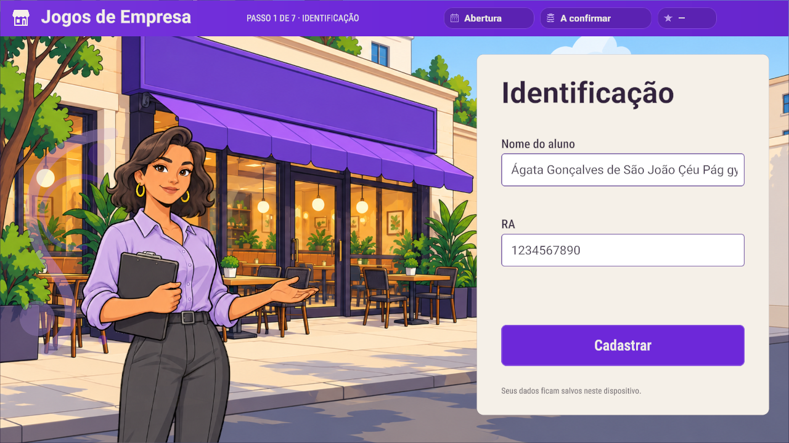
Player real · 1280x720 Concept 02-abertura.png 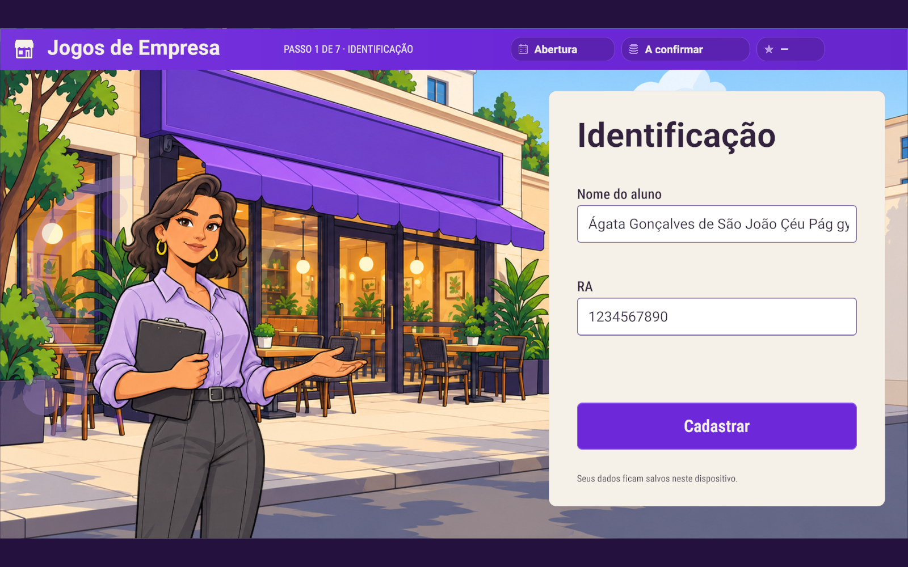
Player real · 1600x1000 location-selected
Concept 02-abertura.png 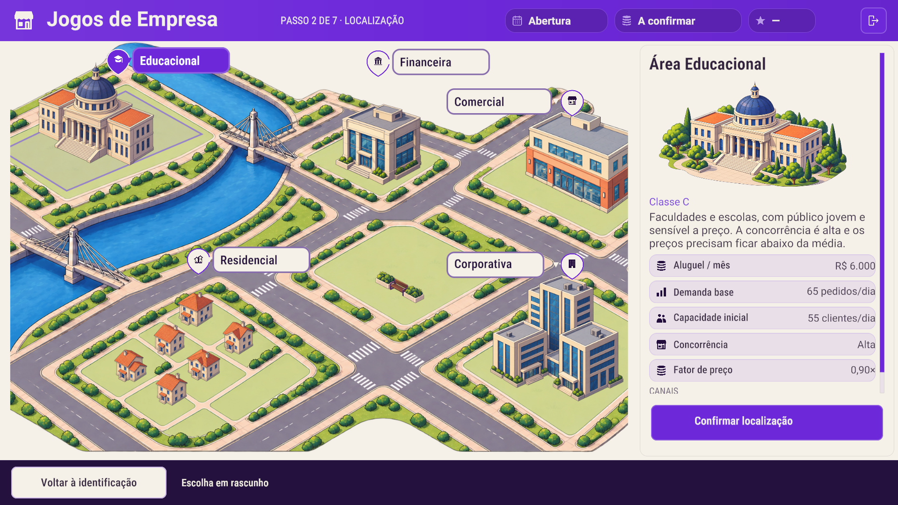
Player real · 1920x1080 Concept 02-abertura.png Player real · 1280x720 Concept 02-abertura.png 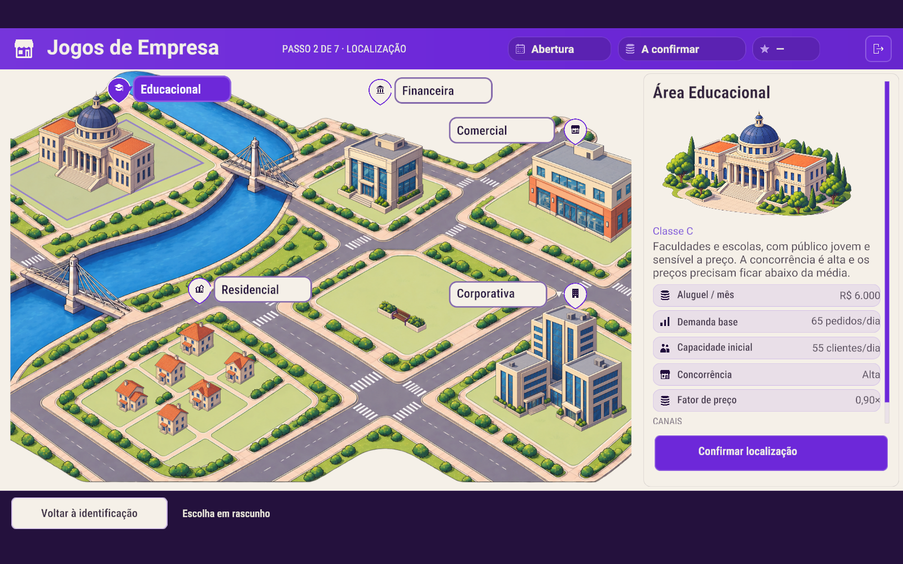
Player real · 1600x1000 hub
Concept 01-hub.png Player real · 1920x1080 Concept 01-hub.png Player real · 1280x720 Concept 01-hub.png Player real · 1600x1000 Inputs, caret, seleção, erro, estados e reentrada
identification-placeholder · 1920x1080 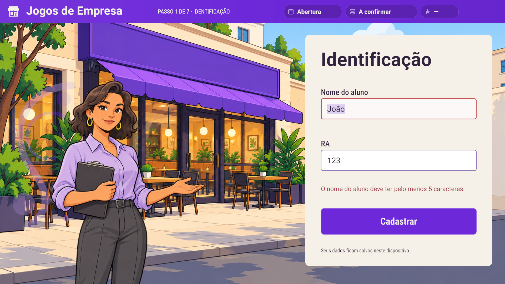
identification-error · 1920x1080 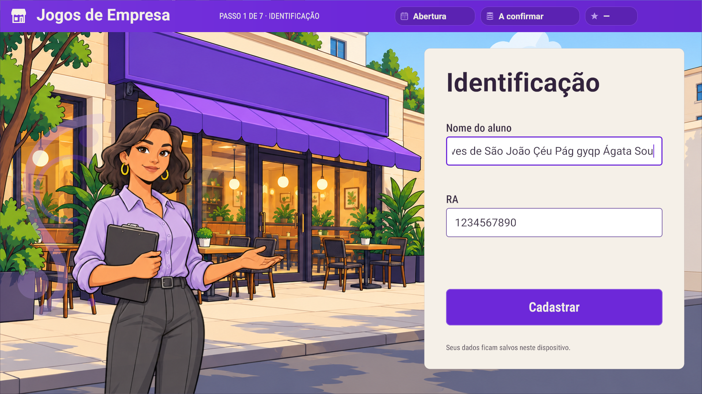
identification-caret-end · 1920x1080 identification-selection · 1920x1080 identification-caret-start · 1920x1080 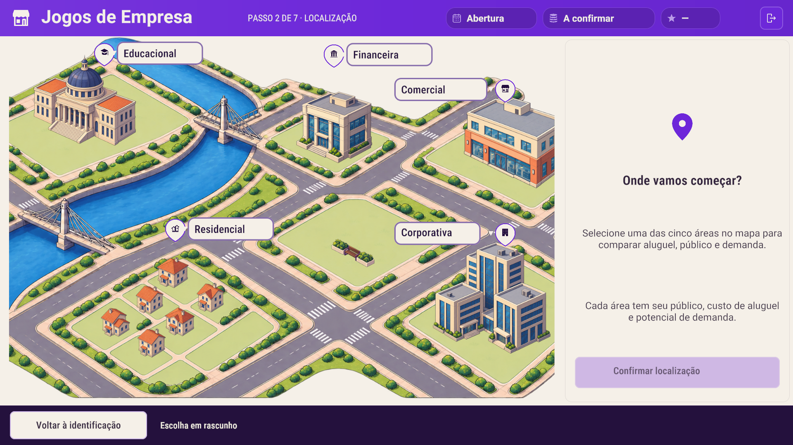
location-empty · 1920x1080 location-selected · 1920x1080 identification-reentry · 1920x1080 hub · 1920x1080 navbar-hover · 1920x1080 navbar-pressed · 1920x1080 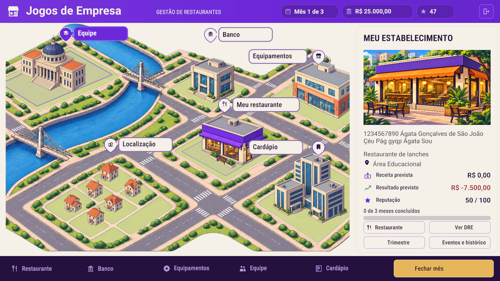
navbar-selected · 1920x1080 navbar-disabled · 1920x1080 navbar-normal · 1920x1080 hub-negative-reentry · 1920x1080 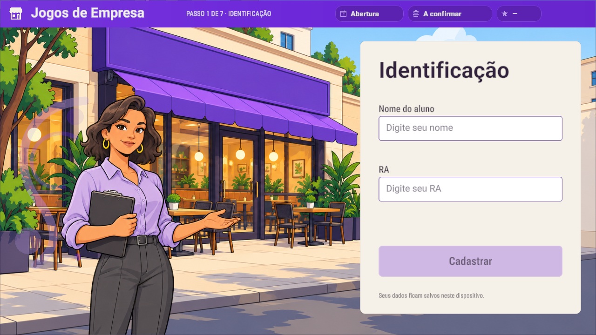
identification-placeholder · 1280x720 identification-error · 1280x720 identification-caret-end · 1280x720 identification-selection · 1280x720 identification-caret-start · 1280x720 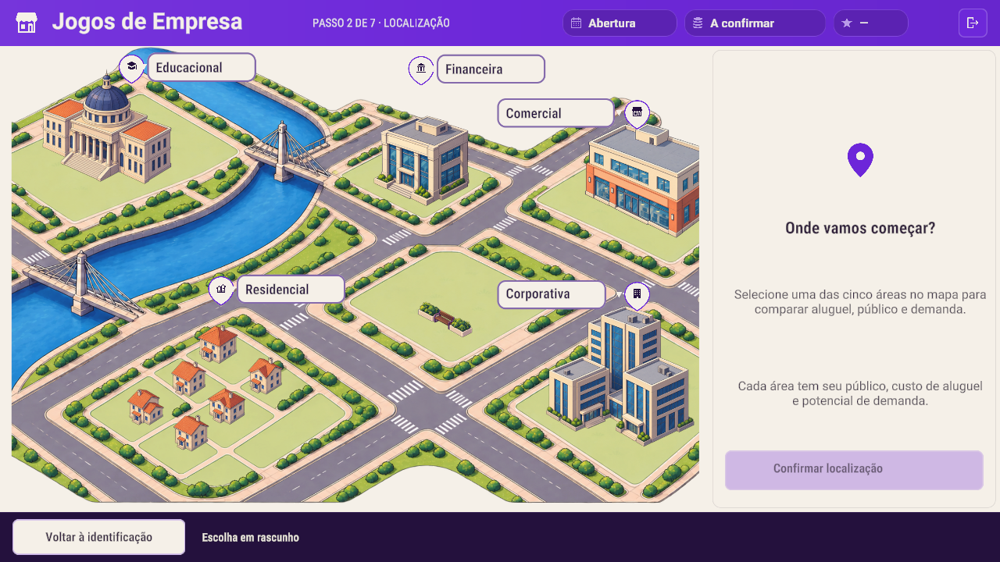
location-empty · 1280x720 location-selected · 1280x720 identification-reentry · 1280x720 hub · 1280x720 navbar-hover · 1280x720 navbar-pressed · 1280x720 navbar-selected · 1280x720 navbar-disabled · 1280x720 navbar-normal · 1280x720 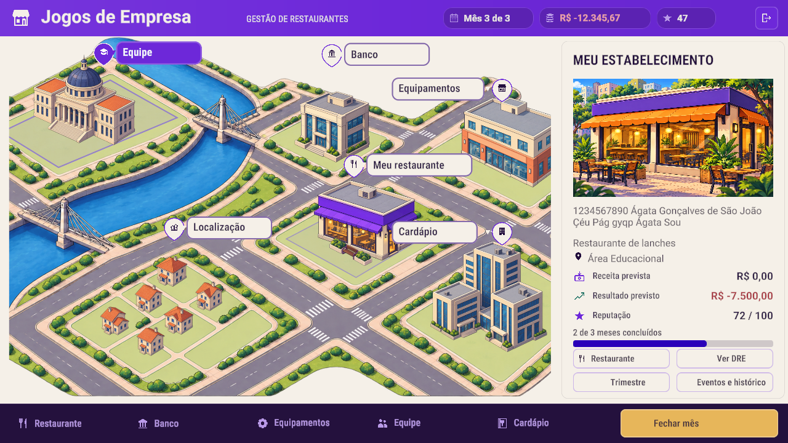
hub-negative-reentry · 1280x720 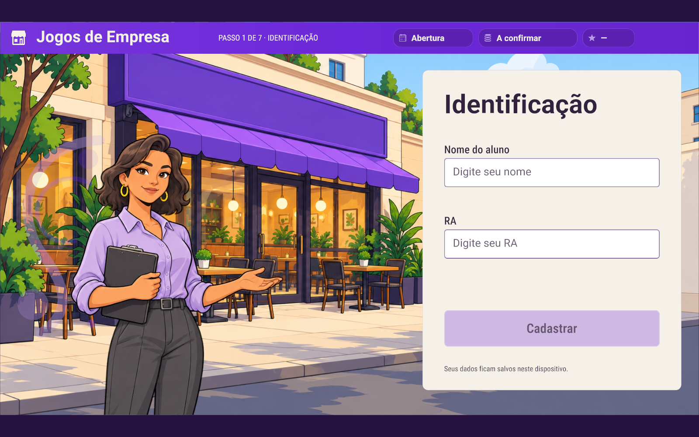
identification-placeholder · 1600x1000 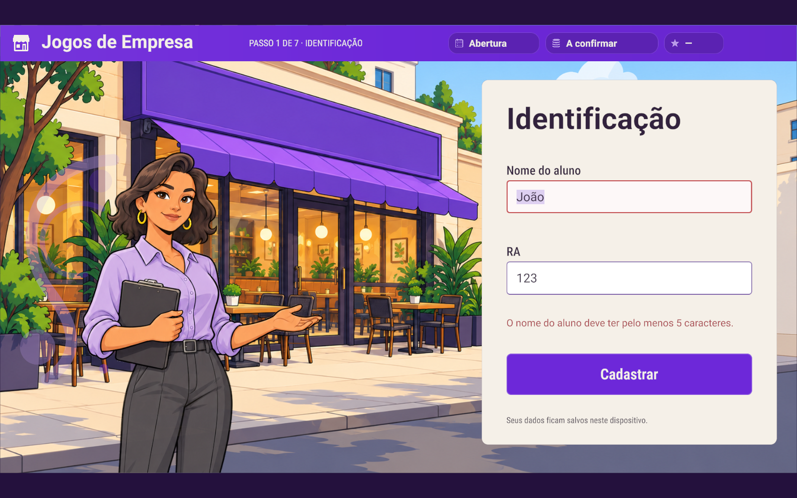
identification-error · 1600x1000 identification-caret-end · 1600x1000 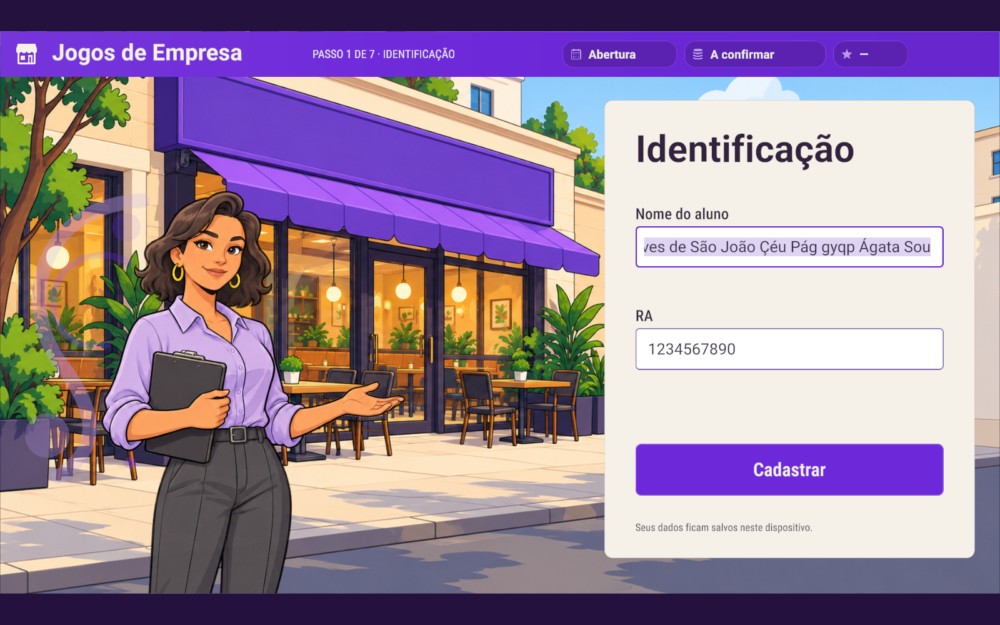
identification-selection · 1600x1000 identification-caret-start · 1600x1000 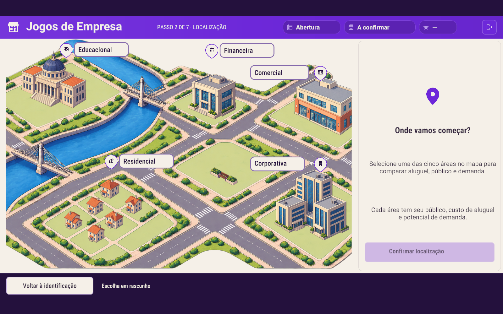
location-empty · 1600x1000 location-selected · 1600x1000 identification-reentry · 1600x1000 hub · 1600x1000 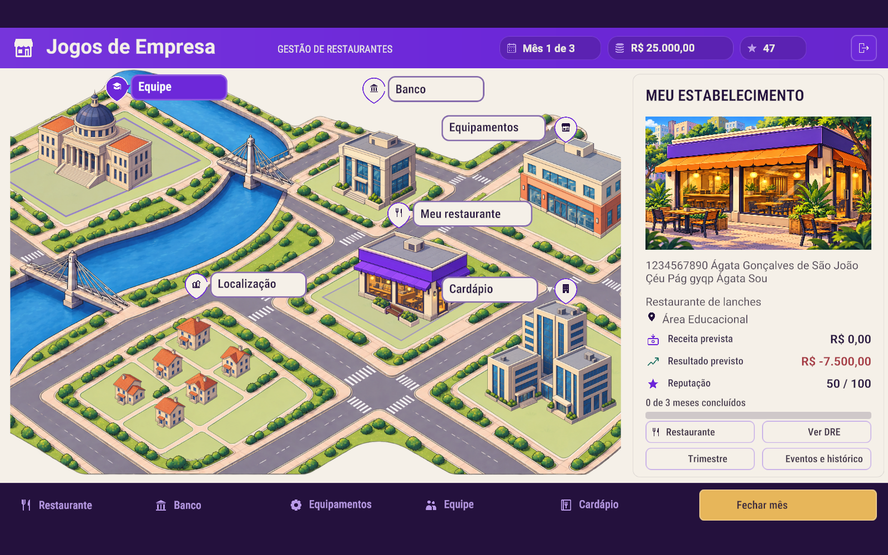
navbar-hover · 1600x1000 navbar-pressed · 1600x1000 navbar-selected · 1600x1000 navbar-disabled · 1600x1000 navbar-normal · 1600x1000 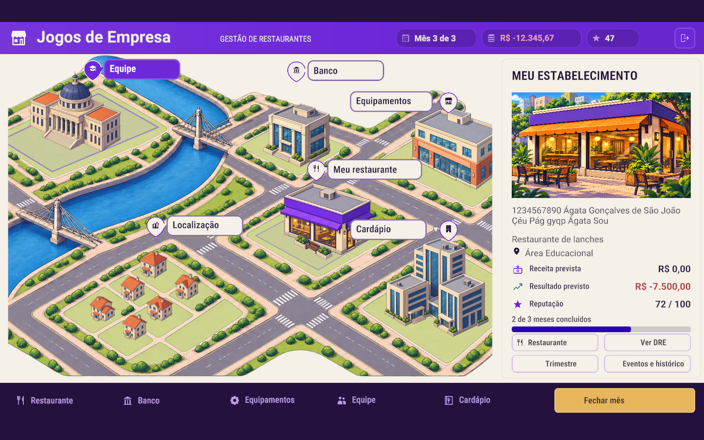
hub-negative-reentry · 1600x1000 Prefabs sem consumidor ativo e o showcase inativo foram verificados por serialização e testes; nenhum painel foi inventado. Nenhum TMP_Dropdown foi encontrado no escopo de produção. O TMP não salvo Canvas/Text (TMP), “Restaurante”, foi preservado na sessão e teve somente o renderer ocultado no player descartável.